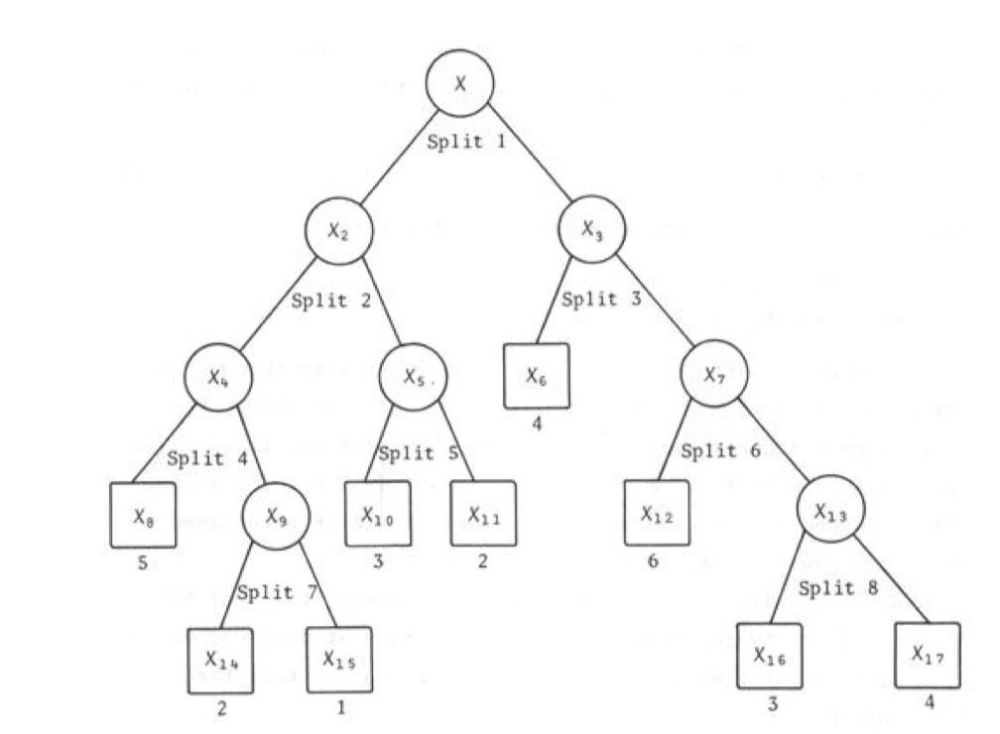
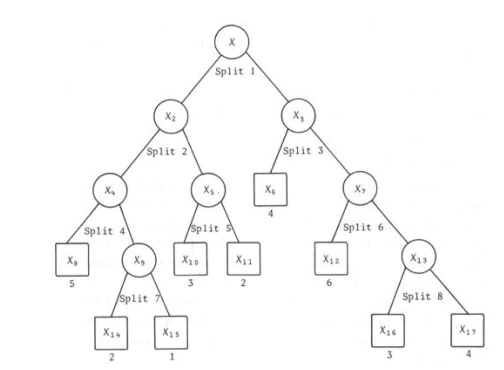
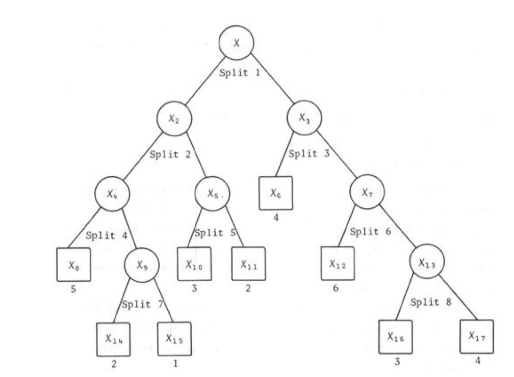

(Seems this picture cannot be showed, weird).

(Seems this picture cannot be showed, weird).Notes for Classification and regression trees(Leo Breima,Jerome H.Friedman, Richard A. Olshen, Charles J.Stone,1984)
###Chap1 The back ground.
1.1 Classifiers as partitions
The classification problem is with a long history and real world background, such as the medical diagnosis problem. We make some measurements on some case or object then predict which class the case is in. Then the book describe 3 examples. The first one is the analysis of a complex chemical compound by analysis its mass spectra. Measurement is contains one or more chlorine atoms or not. The second example is the days in the Los Angeles. The class is the ozone level(low,moderate or high). Measurement involve temperature, humidity and others. The third example is heart attack study. Measurement X is a 19-dimensional space with age, blood presure,.etc.
Then here is the definition of a classifier: Def 1.1 A classifier or classification rule is a function d(x) defined on X so that for every x, d(x) is equal to one of the numbers 1,2,…,J.
That is map from sample space to the class space. Of course the classifier is not come from nothing, it comes from data. The problem is how to use data to construct a classifier. Then here gives some notation and term about the data. Learning sample(training set), is the data pair such like \((x_1,j_1)\), \(x_1\) is the measurement of all kinds of data, \(j_1\) is the indicator of class. This means such case with measurement is located in a class \(j_1\in \{1,2,3....,N\}\).
1.2 Purpose
The general purpose of a classification study is either produce an accurate classifier or “uncover the prediction structure of the problem”, which is, understanding how the variables or intersaction influence/drive the results.
The tree structure model is one of the useful tool to develope a classifier.
There are some interesting data sets which are hard to handle by the statistical method were designed for small data sets having standard structure with all variables of the same type.
The features make a data sets interesting is
“The curse of dimensionality” happens along with complex data sets. This makes the data set harder to analysis. In reponse to this increasing of dimensionality, more powerful statistical methods should be invented.
1.3 Estimating accuracy
This is a brief idea about how to assess a classifier. Given a classifier, a function d(x) from sample space \(X\) to class space \(j\in J=\{1,2,...,N\}\). Use \(R^*(d)\) to denote the “True Misclassification rate”. So the problem transfer to “What is true?” and “How to estimate the \(R^*(d)\)”.
Definition: \((X,Y)\), \(X\in \mathbf{X}\) is the variable space. \(Y\in \mathbf{C}\) is the result of classification. a new sample from probability distribution \(P(A,j)\). A is a subset of \(X\),\(A\subset X\).
Then define \(R^*(d)=P(d(X)\neq Y)\). or \(R^*(d)=P(d(X)\neq Y|T)\)
That is, followed the idea upon. We find new samples from the relevant distribution, then use the classifier to find the incorrect proportion. Interpretation of \(P(A,j)\) is that a case drawn at random from the relevant population has probability \(P(A.j)\) that its measuremenr vector x is in A and its class is j.
-> Comment: This may is to formalize the “probability structure”. A is construct as a data set to be cleared link with a probability(distribution). This is just complex definition of a distribution. To make it simple, it is same to say “Draw new samples from the same distribution as the population”.
The key point to this method is that the population distribution \(P(A,j)\) is independent to the training sets \(T\). These work are beginning definition of “truth”.
The problem we faced is that in actual problem, we only have data set T. We need this to train(construct) the classifier d and estimate \(R^*(d)\). In this situation, we called the \(R^*(d)\) as internal estimates.(Classification and Regression Trees, Leo Breiman .et.al).
-> Comment: In another book, we called it “training error”, means the missclassification( or just error) made by the training set.
The problem is, we use T to construct the d, then also use T to evaluate d, in some cases(most cases), this well overestimate the accuracy. Some methods are designed to solve such difficulties. Splitting the data set to training (construct the d), validating (choose the best model from different constructor/algorithm/methods), and testing(estimate the model accuracy). Or use k-fold cross validation or bootstrap methods, these methods will mentioned in another post.
SKIP the Bayes RULE part. (Include the definition of bayes rule:best over all classifier, Bayes misclassification rate: Bayes rule misclassification rate(because it is the best classifier, the rate is the minimum rate)). Followed the bayes idea, introduce the prior distribution and use prior + \(P(A,j)\) to derive the bayes misclassification rate and bayes rule.
Here is finish of Chap1. It briefly introduce the statistical model and formula. The problem we facing and general framework. Next chapter is beggining of the tree classification.
###Chap2 Introduction to tree classification
1-2 page: introduction a example about ship classification project. with some discussion.
Problem: Reduction of dimensionality. Many of the information in any profile was redundant. Such as highly related variables. There is a new difficulty: each variable had dimensionality, from 1 to 15. Tree structured approach maybe suit this occasion.
####2.2 Tree structured classifiers
###1.1 Classifiers as partitions The classification problem is with a long history and real world background, such as the medical diagnosis problem. We make some measurements on some case or object then predict which class the case is in. Then the book describe 3 examples. The first one is the analysis of a complex chemical compound by analysis its mass spectra. Measurement is contains one or more chlorine atoms or not. The second example is the days in the Los Angeles. The class is the ozone level(low,moderate or high). Measurement involve temperature, humidity and others. The third example is heart attack study. Measurement X is a 19-dimensional space with age, blood presure,.etc.
Then here is the definition of a classifier: Def 1.1 A classifier or classification rule is a function d(x) defined on X so that for every x, d(x) is equal to one of the numbers 1,2,…,J.
That is map from sample space to the class space. Of course the classifier is not come from nothing, it comes from data. The problem is how to use data to construct a classifier. Then here gives some notation and term about the data. Learning sample(training set), is the data pair such like \((x_1,j_1)\), \(x_1\) is the measurement of all kinds of data, \(j_1\) is the indicator of class. This means such case with measurement is located in a class \(j_1\in \{1,2,3....,N\}\) (How to draw a classification tree in R??) (Here just a simple example in rpart package)
library(rpart)
data(kyphosis)
# grow tree
fit <- rpart(Kyphosis ~ Age + Number + Start,
method="class", data=kyphosis)
#printcp(fit) # display the results
#plotcp(fit) # visualize cross-validation results
#summary(fit) # detailed summary of splits
# plot tree
plot(fit, uniform=TRUE,
main="Classification Tree for Kyphosis")
text(fit, use.n=TRUE, all=TRUE, cex=.5)

(Seems this picture cannot be showed, weird).

Tree structure
(This works,so strange). (But why not work under the directory /img?)
Here is the tree structure. The leaf nodes, whose subsets are not split, in this case showed upon are \(X_8,X_{14},X_{15},X_{10},,X_{11},X_{12},X_{16},X_{17}\), called terminal nodes. We can designate each terminal nodes, or leaf nodes, a class label(or regression value for regression tree). The tree classifier works in this way, from the root nodes, we have observation x. It is determined whether x goes to split left or right by the value of x and how the split is defined. Repeat this procedure until x go to terminal nodes.Than we can predict the x corresponds to the class label be assigned to the termnal nodes.
Problem: How to use training set \(T\) to determine the splits, terminal nodes and assignments (class label.).
Let us answer the first problem that how to use training set \(T\) to determine the binary split of root into smaller and smaller pieces. The fundmental idea is to select each split of a subset so that the data in each of the descendant subsets are “purer” than the parent nodes.
->Comment: This idea is something like non-supervised methods, the splitting part seems not involve the respond variable, class label. The assignning procedure is after the tree construction procedure.
First,in the six-class case,using \(p_1,...p_6\) to denote the proportions of class 1,….,6 profiles in any nodes. Without any prior information, in the root nodes \(t_1\),\((p_1,p_2,...,p_6)=(\frac{1}{6},\frac{1}{6},\frac{1}{6},\frac{1}{6},\frac{1}{6},\frac{1}{6})\).
A good split of \(t_1\) can be one that separates the profiles in \(T\) so that all profiles in classes 1,2,3 go to the left node and the profiles in 4,5,6 go to the right.

First split
Once a good split of \(t_1\) is found, we can use same method to find a good split of \(t_2\) and \(t_3\).
This kind of split means, (if we can find such kind of split)the left side only contains class 1,2,3 and right only contains 4,5,6. Both left side and right side is “purer”. Then we can do a search over all kinds of splits, then the measurement of how goodness of split is by how pure it is. Then just choose the split which minimize the “pure”.
Now the problem turns to how to define a quantity about the measurement of “pure”.
We use \(\phi\) to denote the impurity function. Then the function should follow that, for 6 class example, \(\phi(\frac{1}{6},\frac{1}{6},\frac{1}{6},\frac{1}{6},\frac{1}{6},\frac{1}{6})=maximum\) . Because when in this case, the node can contain points from all kinds of classes, it is chaos, not pure at all. \(\phi(I_i)\)=0, \(I_i=(0,.,1,.,0)\), i-position is 1 and other is 0. In this case, the node only contains points from a single class, it is pure, so the measurement of impurity get minimum to 0.
Once we defined the impurity measurement, we can use this measurement to define the goodness of the split. The goal of a split is decrease the impurity of a node. Intuitively, the decrease in impurity can be the goodness of the split as \[ \bigtriangleup i(s,t)=i(t)-p_Li(t_L)-p_Ri(t_R) \] \(s\) is a candidate split, \(t_L\) is the left son node, \(t_R\) is the right son node. \(p_L\) is the proportion of points(cases, observations) from t go into \(t_L\), the same for \(p_R\). This descend of impurity can be viewed as difference of impurity between parent nodes with weighted average of impurity for son nodes.
Then we can develop a workflow as below
-1 Define the node proportions \(p(j|t)\),j=1,…,6, to be the proportion of the cases \(x_n\in t\) belongs to class j. s.t. \[ p(1|t)+...+p(6|t)=1 \] -2 Define a measure i(t) of the impurity of nodes t as a nonnegative function \(\phi\) of \(p(1|t),...,p(6|t)\).
-> Comment: \(p(1|t),...,p(6|t)\) contain the information about t, so the \(\phi\) is a function directly by \(p(j|t)\), and indirectly by \(t\).
-3 Define a candidate set S of binary splits s at each node.
The 3 part can be viewed as the partition lines of the feature space.

First split
Every cross lane parallel to each axe is a partition of the sample space.
So the candidate partition can be viewed as every point in horse power axis or the whellbase axis(in the figure example). This structure is not like a tree structure,it more like how to partition the geometric, but actually it’s equivelant. We can use “Questions” structures to make binary split equivelant to the geometric partition.
For example, the basic format of questions is “Is \(x\in A\)?”, to the partition of the picture is “Is Horse power great than 0.6?”, then a candidate question can lead a candidate split. Anser “Yes” to \(t_L\) and all \(x_n\) in t answer “No” to \(t_R\). The boundary of A is the geometric partition curve of the previous graph structure.
A exist impurity measurement be defined as \[ i(t)=-\sum ^6 _{j=1} p(j|t) log p(j|t) \] Of course this is not the only definition of impurity, other can be prefable for the real projects.
A question set S, is with the form:
“Is the watermelon’s weight located in the interval [a,b], where \(a\leqslant b\) and a,b range from 0 to 10 in steps of 0.1?” Then we construct a set questions. One question inside the question set is “Is the watermelon’s weight in the interval 3.1 kg to 5 kg?”, just change a and b we can travel all the candidate questions. It gives total \(\frac{100\times101}{2}\simeq 5000\) questions.
After we construct a question set S, we can search a best question from the question set as the split in current node.
So we can conclude the tree grown method: At the root node \(t_1\), a search was made through all candidate splits from construct question set S to find that a split \(s^*\) which gave the largest decrease in impurity; i.e., \[ \bigtriangleup i(s^*,t_1)=\mathit{max}_{s\in S} \bigtriangleup i (s,t_1) \] Then the root node was split into \(t_2\) and \(t_3\) using the split \(s\).
Repeat the same search procedure for \(t_2\) and \(t_3\) separately to construct the tree.
Another problem rising here. When the procedure stop? Intuitively, like the newton raphson method in numeric analysis, when the procedure not bring significant income, it’s the time to stop it. Translate to the tree built way, when a node t cannot find a split s that sigfinicant decrease the impurity, then node t was not split and became a terminal node. That is, \[ p(j_0|t)=max_jp(j|t) \] Then, t was designated as a class \(j_0\) terminal node.